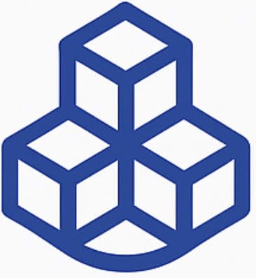

什么是知识图谱？
什么是知识图谱？
在 AI 时代，传统的文档式知识库已难以满足企业快速决策与智能问答的需求。知识图谱通过实体、属性与关系的结构化表示， 使企业能高效整合信息、理解语义、驱动智能 Agent，成为构建企业级 AI 系统的关键支撑。

 我们的构建流程
数据采集与清洗
整合结构化与非结构化数据源
→
实体识别与关系抽取
从文本中挖掘关键实体及其关系
→
关系对齐
语义规范化与命名统一
→
图数据库构建
以 Neo4j 为代表的结构存储
→
可视化与分析
图谱结构清晰展示，分析关系
→
语义问答
结合大模型实现智能问答
 实际演示效果
实际演示效果
我们已在多个项目中构建数千级实体与关系的知识图谱，可进行关键词查询、上下游推理、图谱导航与语义问答等操作。

某央企飞行器图纸构建实体结构与属性标注

不同模态数据统一建图，支撑智能推理问答
我们的技术优势
中文大模型适配
自主适配各行业数据、模型泛化能力强
主流图数据库支持
支持 Neo4j、ArangoDB、OrientDB 等
知识图谱构建+补全
完整支持实体抽取、知识融合与知识生成
企业应用场景
内部知识检索系统
构建高效企业知识搜索引擎
专家辅助决策系统
多维信息聚合支撑复杂分析
RAG 问答系统
构建私域知识与大模型融合智能问答
自动文档归档
实现非结构化信息自动结构化落库